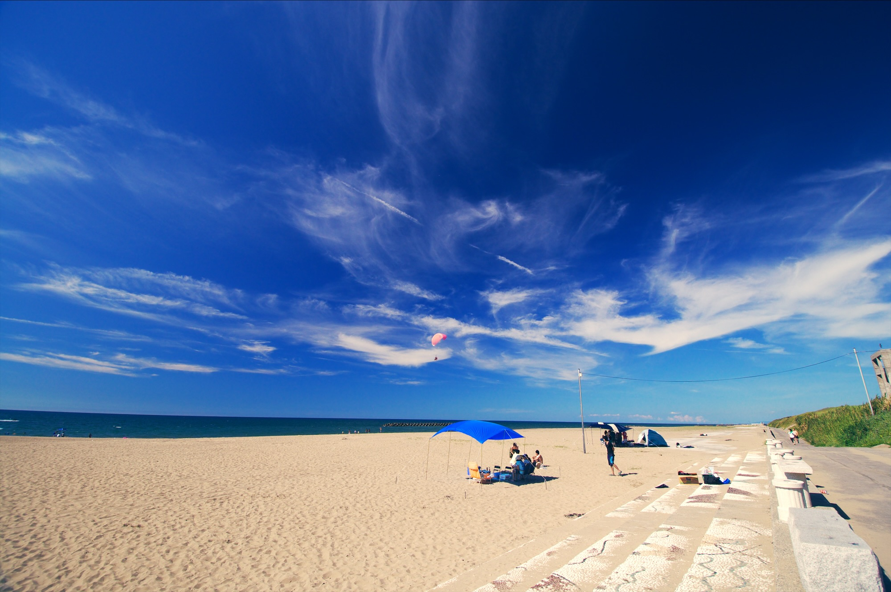
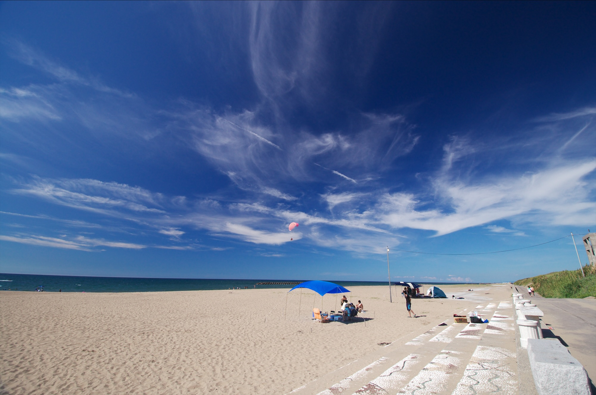
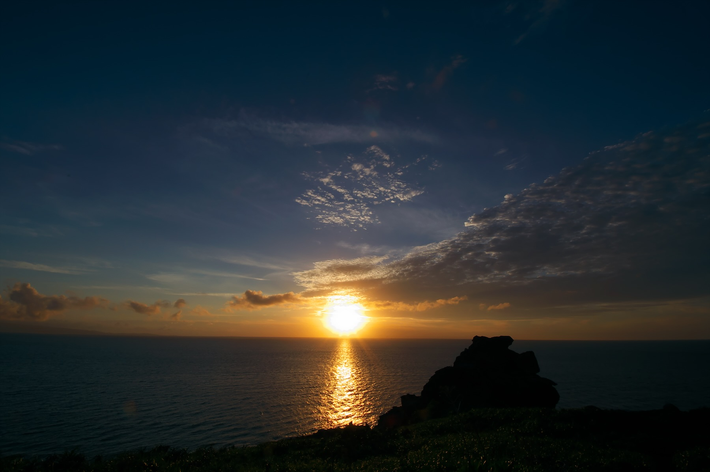
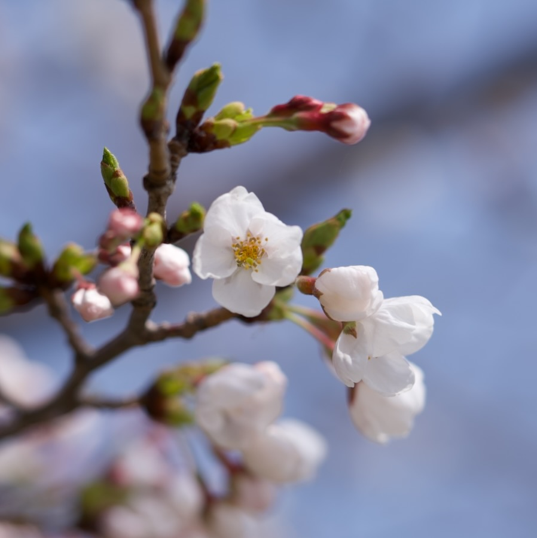
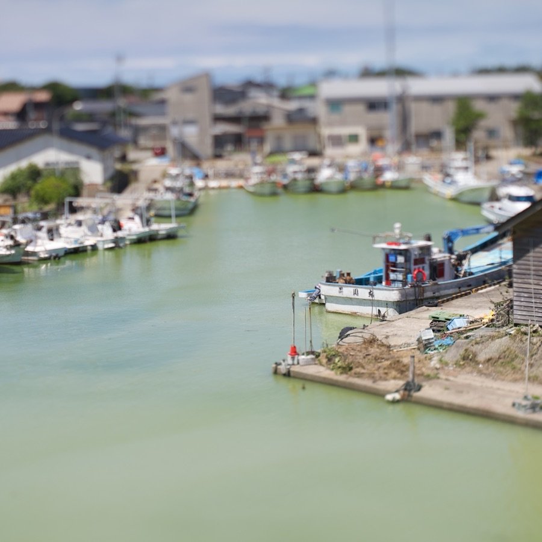
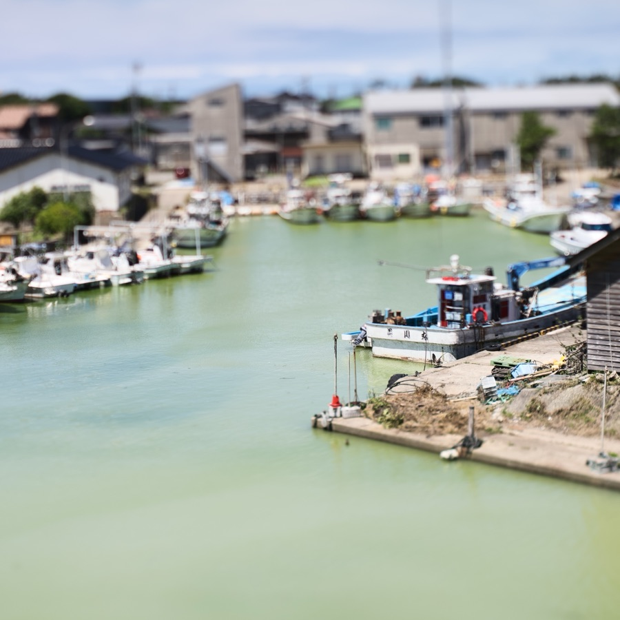
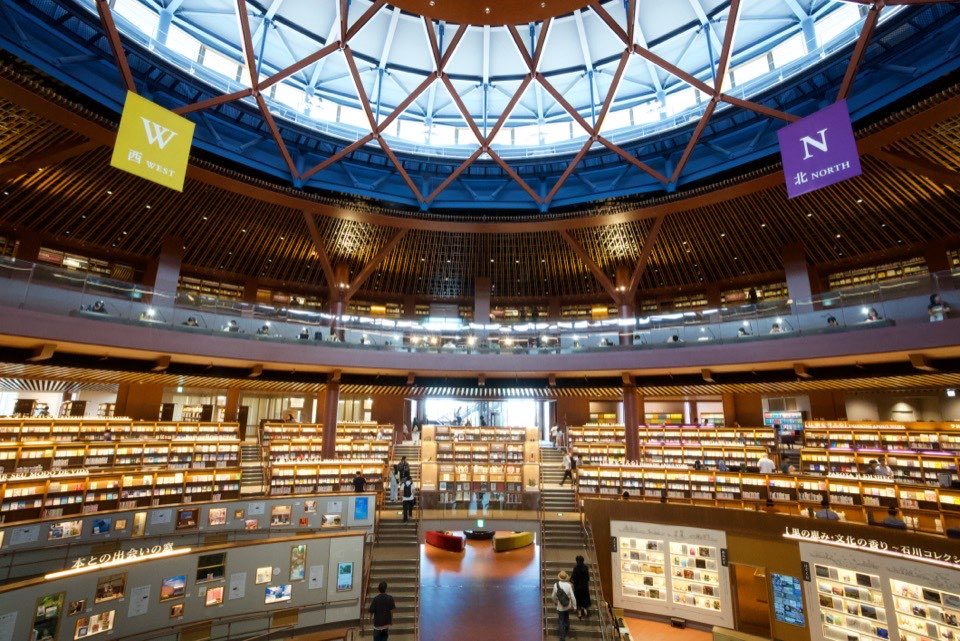
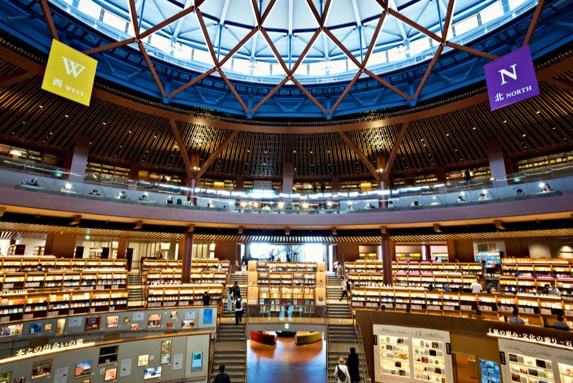
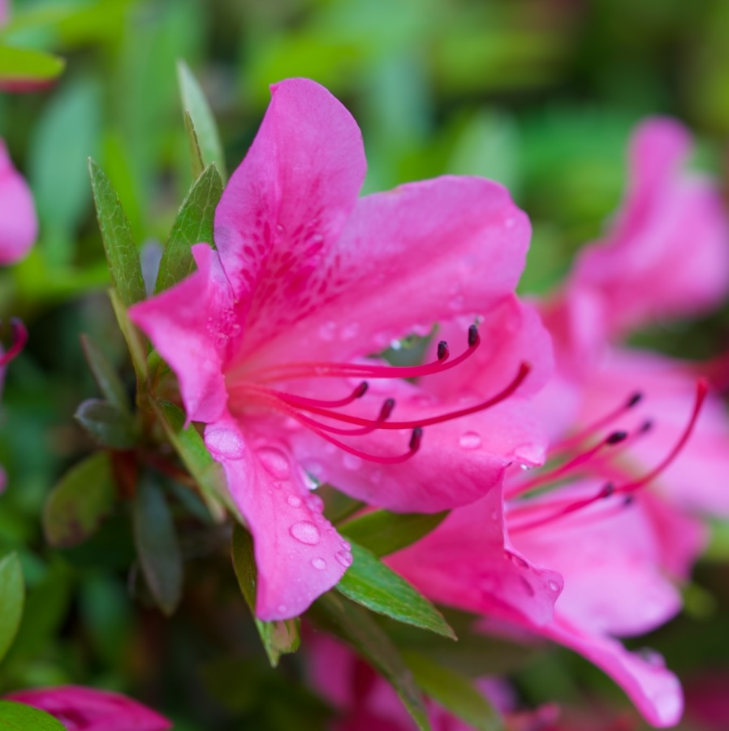
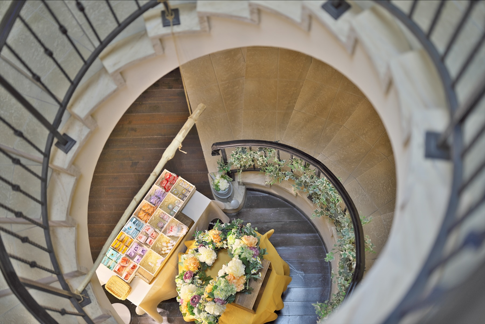

目標で頼む
言うのは、
ゴールだけ。
「平均輝度 0.45」「白飛びは 1% まで」。合う露出とハイライト回復は Rawgenzo が探します。AI にスライダーを往復させません。
Rawgenzo は、Apple Silicon のために書かれた RAW 現像ソフトです。macOS の Core Image で RAW を読み、Metal で補正する。余計なものを挟まず、写真と向き合う時間だけを残しました。
Native
Apple Silicon で
ネイティブに動作
21
すぐに使える
LUT を同梱
7
種類の
構図ガイド
16bit
TIFF と
HDR HEIF で書き出し
AI に任せる New
「全部の写真の明るさを揃えて」「この写真をモノクロに」。Claude Code などの AI に話しかけるだけで、Rawgenzo が現像設定を変えます。変わっていく様子は、アプリの画面でその場に。
再現デモ: AI に「全部の写真の明るさを揃えて」と頼むと、6 枚の明るさが揃い、届かない 1 枚について AI が判断を求めます。「この写真をモノクロにして」と頼むと、開いている写真と彩度のスライダーがその場で変わり、「やっぱり戻して」で元に戻ります。
画面は実際の動作を再現したものです。AI とのやり取りは、Claude Code などの MCP クライアントで行います。
44→9
同じ 5 つの指示に、AI が使った道具の呼び出しの回数。試験を重ねて仕組みを直した、実際の記録です。
21→1
「6 枚の明るさを揃えて」にかかった呼び出し。目標を受け取った Rawgenzo が、写真ごとの露出を自分で探します。
こんなふうに頼めます
明るさ・色
「全部の写真の明るさを揃えて」
「桜の花びらだけ、もう少しピンクに」
切り抜き
「人物が主役になるように切り抜いて」
「2 度傾けて」
雰囲気
「シネマ調にして」
「フィルム風を少し弱めに」
レンズ・出力
「歪曲補正をオンに」
「HDR 出力をオンに」
戻す
「今の変更を取り消して」
「切り抜きは残して、ほかは初期値に」
調整パネルの現像設定は、すべて AI に頼めます。
目標で頼む
「平均輝度 0.45」「白飛びは 1% まで」。合う露出とハイライト回復は Rawgenzo が探します。AI にスライダーを往復させません。
その場で見える
開いている写真はすぐに描き直され、AI が動かしたスライダーが光ります。「この写真」と言えば、今見ている写真のことだと伝わります。
取り消し
取り消しは頼んだ作業ごと。あなたが後から触った写真は、AI が取り消そうとしても取り消しません。RAW は書き換えません。
鍵を持たない
Rawgenzo は AI の API キーを持たず、外からの接続も受けません。AI と話すのは手元の MCP クライアント。AI に渡るのは数値と、必要なときの縮小画像だけです。
使いはじめる
~/.Rawgenzo/.mcp.json)が作られます~/.Rawgenzo で Claude Code を開き、話しかける。アプリで開いている写真は「この写真」で伝わります# アプリが作った登録(.mcp.json)を # Claude Code が読み、Rawgenzo とつながる cd ~/.Rawgenzo claude
試作の機能です。書き出しと、アプリで写真を開くことは、まだ AI からはできません。
ルック
フィルム風・シネマ風・モノクロ・ノスタルジックの 4 つの組み込みルックに加え、.cube 形式の 3D LUT をフォルダに置くだけで、自分のルックを増やせます。効き具合は「強さ」で 0〜100% まで。すぐに試せる 21 個の LUT も付属しています。


付属の LUT を、Rawgenzo のルックと同じ方法(sRGB ガンマで 3D LUT を適用)で写真に掛けた例です。元の写真は撮影時の JPEG で、Rawgenzo で現像したものではありません。
機能

HDR トーン
ハイライトの回復とシャドウの持ち上げを、明るさの局所的なマスクで。コントラストは色相を崩さない自前のトーンカーブで ±120 まで。
非破壊編集
調整は RAW の隣の小さな JSON に自動で保存。いつでも最初からやり直せます。
DSC03356.ARW.rawgenzo.json { "cameraProfileID" : "sony.ilce-7sm3", "settings" : { "exposure" : 0.5, "contrast" : 0.3, "look" : { "id" : "builtin.film", "strength" : 0.7 } } }
表示とディテール
写真の 1 ピクセルを画面の 1 物理ピクセルに。ピンチやダブルクリックで拡大し、シャープネスとノイズ除去を細部で確かめられます。
クロップと傾き補正
±15° の傾き補正。枠は常に回転後の画像の内側に収まり、四隅に何も無い部分が写り込みません。
レンズ補正
ARW に記録された補正値から、周辺減光・歪曲・倍率色収差を補正。初めは撮影時のカメラの設定に従い、写真ごとに切り替えられます。
色別補正
8 色の帯ごとに色相・彩度・輝度を整えるほか、スポイトで拾った色だけを狙えます。白に近い淡い花びらにも色を足せて、空や枝はそのまま。AI に頼めば、効く範囲と強さは Rawgenzo が決めます。

トーンカーブ
輝度・R・G・B のカーブを、クリックした所に点を置いて作ります。明るさだけを変えて色合いを保つか、彩度も一緒に上げるかは「彩度の連動」で。グラフの後ろには、カーブを掛ける前のヒストグラム。AI からも、点や決まった形でカーブを指定できます。


編集前と見比べる
「/」キーを押している間、プレビューが編集前に戻ります。切り抜きも傾きも外した、撮ったままの姿。離せば編集後に戻ります。「すべて初期値に戻す」と違って編集は消えないので、どれだけ変えたかを何度でも確かめられます。


ヒストグラムと撮影情報
表示している現像結果の R・G・B と明るさを、調整のたびに描き直します。白飛び・黒つぶれの割合も一緒に。EXIF の撮影情報はパネルで。
フォーカス位置
ソニーの ARW に記録された、撮影時にピントを合わせた位置をプレビューに重ねます(⌥⌘F)。切り抜いても傾けても、印は同じ所に。

書き出し
JPEG・HEIF・16bit TIFF・HDR HEIF。色空間は sRGB / Display P3 / Adobe RGB。ファイル名は撮影日や連番、レンズ名を組み合わせたテンプレートで。
{date}_{seq:3}
20260621_001.jpg
構図ガイド
三分割から黄金螺旋まで 7 種類。重ねて表示でき、色で見分けられます。クロップ中は枠の中に描かれるので、切り抜きながら構図を詰められます。

コマンドライン
アプリと同じ現像エンジンを使う rawdev を同梱。フォルダを渡せば中の RAW をまとめて現像します。出力先や形式はアプリの書き出し設定と共有。
$ rawdev check Core Imageの対応カメラ数: 932 対応: Sony Alpha ILCE-7S III $ rawdev name "{date}_{model}_{seq:3}" ~/Pictures/ARW DSC03356.ARW → 20260621_ILCE-7SM3_001 DSC03402.ARW → 20260621_ILCE-7SM3_002 DSC03451.ARW → 20260622_ILCE-7SM3_003 $ rawdev develop ~/Pictures/ARW --hdr 0.6 --look builtin.film $
Photographs by Yukimitsu IZAWA
仕様
.cube 3D LUT~/.Rawgenzo/rawdev mcp。Claude Code などの MCP クライアントから操作はじめる
ビルド済みのアプリは配布していません。Xcode の入った Mac で、次のコマンドを実行してください。Rawgenzo.app がビルドされ、/Applications に入ります。コマンドラインツールと AI 用の rawdev もアプリの中に入るので、終わったらクローンしたフォルダは消してかまいません。
git clone https://github.com/Rawgenzo/Rawgenzo.git
cd Rawgenzo
./scripts/make-app.sh --install開発中のソフトウェアです。現在の制約は README の「現状について」をご覧ください。